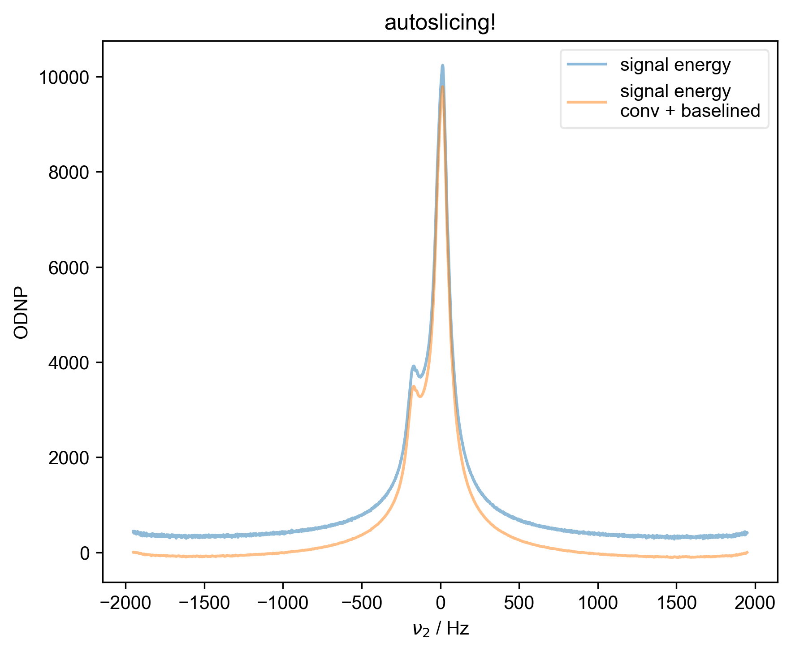
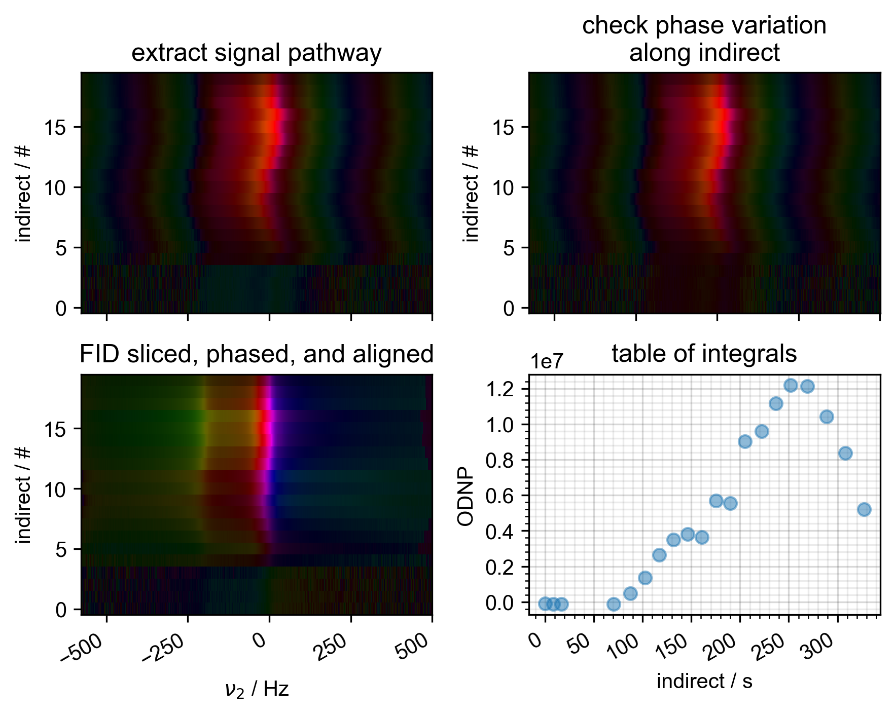
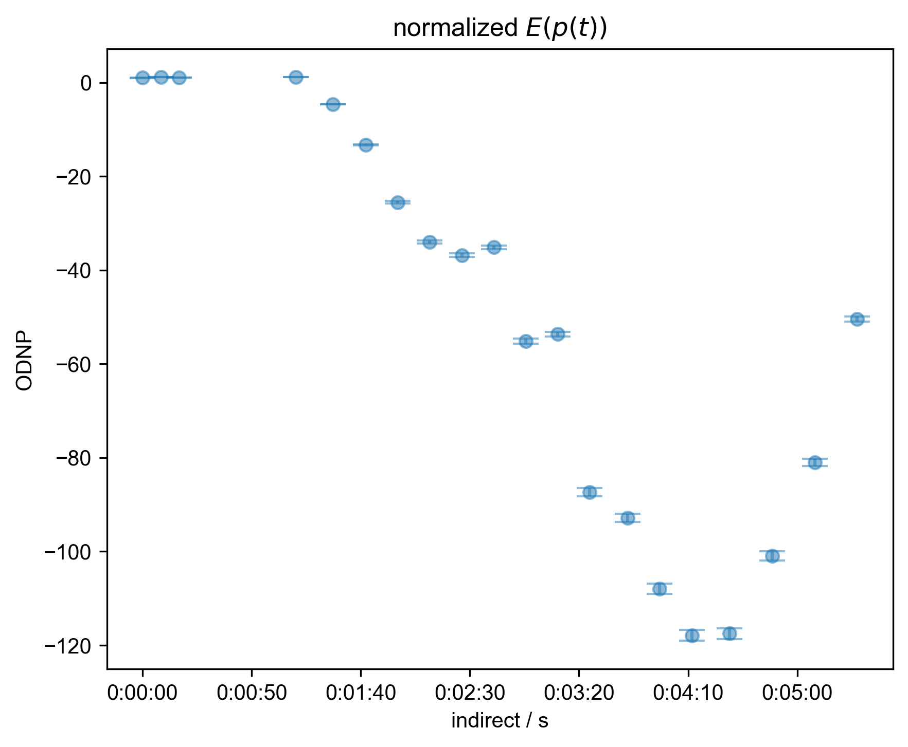
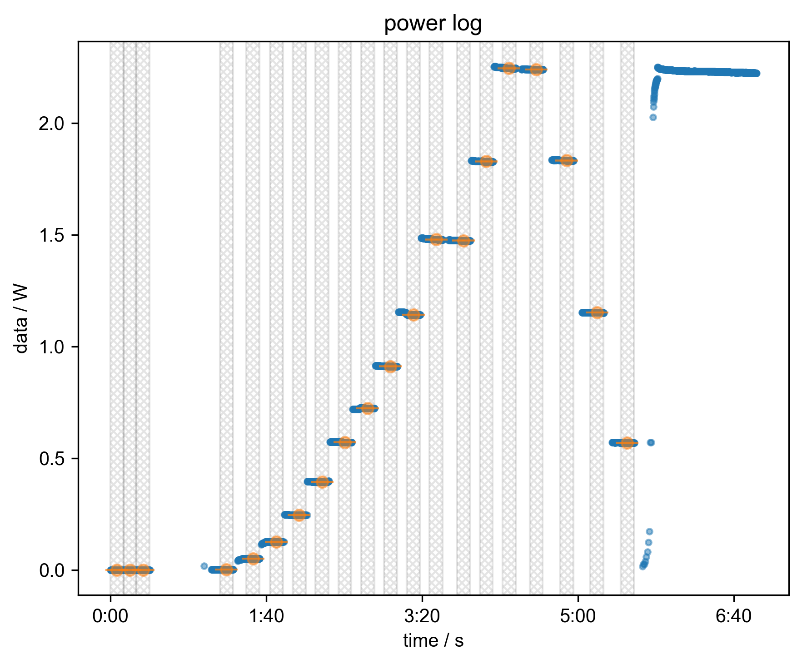
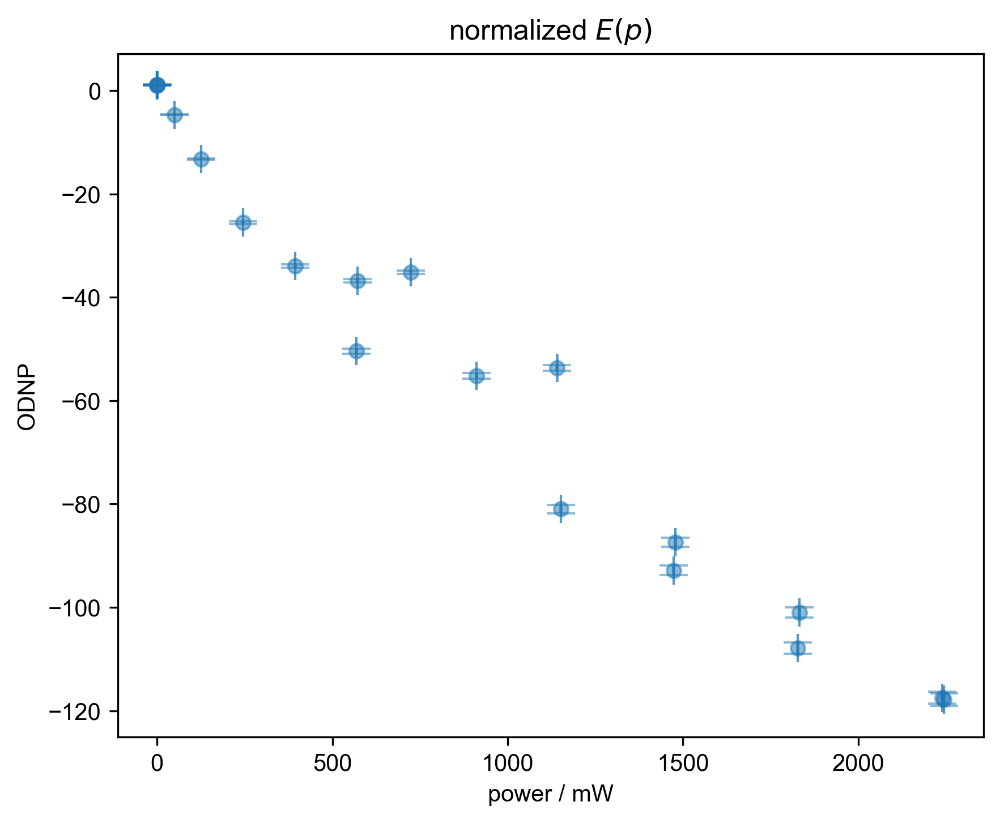
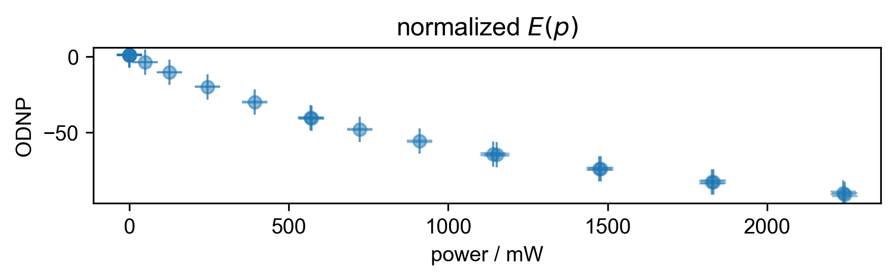

Note
Go to the end to download the full example code
Process Enhancement experiment¶
Opens .h5 results file, uses rough_table_of_integrals() to roughly process dataset including generating a table of integrals
- 
- 
- 
- 
- 
- 
You didn't set units for indirect before saving the data!!!
/home/jmfranck/git_repos/pyspecdata/pyspecdata/core.py:9166: RuntimeWarning: invalid value encountered in sqrt
return np.sqrt(arg)
/home/jmfranck/git_repos/pyspecdata/pyspecdata/core.py:1568: UserWarning: marker is redundantly defined by the 'marker' keyword argument and the fmt string "o" (-> marker='o'). The keyword argument will take precedence.
retval = myplotfunc(*plotargs, **kwargs)
/home/jmfranck/git_repos/pyspecdata/pyspecdata/core.py:1568: UserWarning: marker is redundantly defined by the 'marker' keyword argument and the fmt string "." (-> marker='.'). The keyword argument will take precedence.
retval = myplotfunc(*plotargs, **kwargs)
/home/jmfranck/git_repos/pyspecdata/pyspecdata/core.py:1568: UserWarning: marker is redundantly defined by the 'marker' keyword argument and the fmt string "ko" (-> marker='o'). The keyword argument will take precedence.
retval = myplotfunc(*plotargs, **kwargs)
/home/jmfranck/git_repos/pyspecdata/pyspecdata/core.py:1342: UserWarning: marker is redundantly defined by the 'marker' keyword argument and the fmt string "o" (-> marker='o'). The keyword argument will take precedence.
return ax.errorbar(*tebargs[:-1], **tebkwargs)
1: autoslicing!
2: Raw Data with averaged scans
3: power terms |||ms
4: check covariance test
5: residual after shift |||('Hz', 's')
6: normalized $E(p(t))$ |||s
7: power log
8: normalized $E(p)$ |||mW
import pyspecProcScripts as prscr
import pyspecdata as psd
import os
import datetime
import matplotlib.pyplot as plt
plt.rcParams["image.aspect"] = "auto" # needed for sphinx gallery
# sphinx_gallery_thumbnail_number = 2
with psd.figlist_var() as fl:
thisfile, exptype, nodename = (
"240924_13p5mM_TEMPOL_ODNP_1.h5",
"ODNP_NMR_comp/ODNP",
"ODNP",
)
s = psd.find_file(
thisfile,
exp_type=exptype,
expno=nodename,
lookup=prscr.lookup_table,
)
orig_axis = s["indirect"] # let's save this so we
# can pass it to the log
s["indirect"] = (
s["indirect"]["start_times"] - s["indirect"]["start_times"][0]
)
s.set_units("indirect", "s")
s, _ = prscr.rough_table_of_integrals(s, fl=fl)
assert psd.det_unit_prefactor(s.get_units("indirect")) == 0
s.set_error(s["indirect", 0].item() * 0.01) # We are not calculating the
# errors in rough table of
# integrals, so just make up a
# reasonable sized random
# number so that I can see the
# relative errors!
s /= s["indirect", 0:1]
fl.next("normalized $E(p(t))$")
s["indirect"] -= s["indirect"][0]
fl.plot(s, "o")
# {{{ this is just matplotlib time formatting
ax = plt.gca()
ax.xaxis.set_major_formatter(
plt.FuncFormatter(lambda x, _: str(datetime.timedelta(seconds=x)))
)
# }}}
s["indirect"] = orig_axis
s = prscr.convert_to_power(s, thisfile, exptype, fl=fl)
fl.next("normalized $E(p)$")
fl.plot(s, "o")
Total running time of the script: (0 minutes 3.153 seconds)